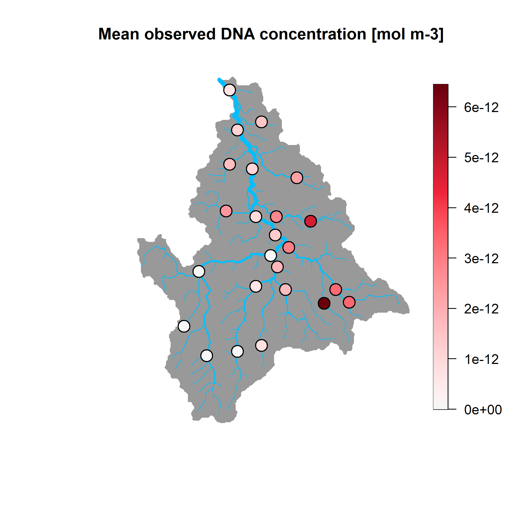
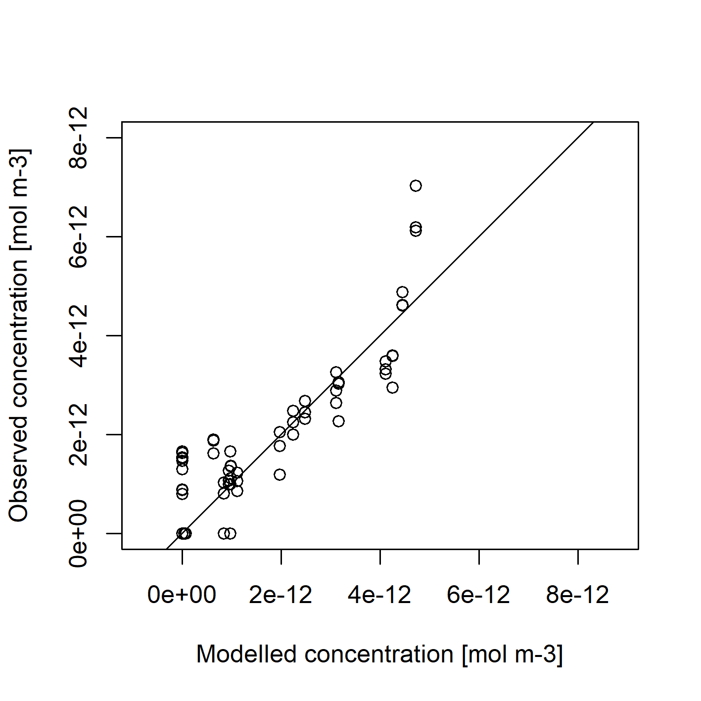
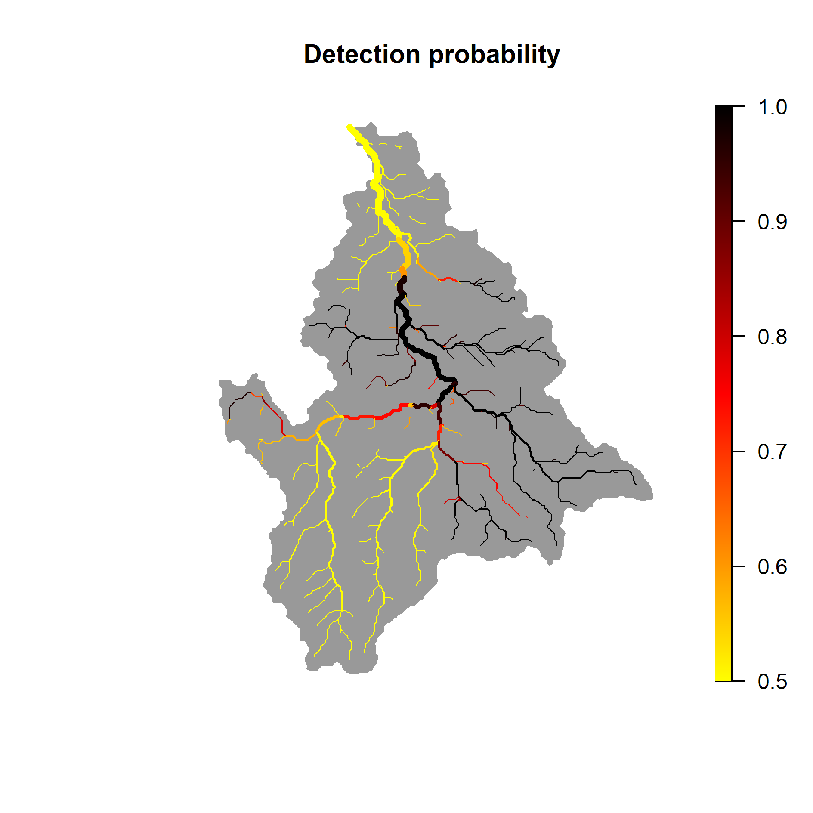

Overview
eDITH (eDNA
Integrating Transport and
Hydrology) allows spatially explicit interpretation and
prediction of environmental DNA (eDNA) data collected from river
networks. It implements the eDITH model, which couples a
geomorphological and hydrological characterization of a catchment, eDNA
transport and decay dynamics, and a species distribution model, to
transform pointwise water eDNA data (sensu (Pawlowski, Apothéloz-Perret-Gentil, and Altermatt
2020)) collected at a catchment into space-filling predicted maps
of taxon density.
Features:
- It provides estimations of detection probability of any number of taxa across a whole catchment based on spatially replicated eDNA data of these taxa.
- It can handle both DNA concentration data (e.g., from qPCR) and metabarcoding (read counts) data of any taxonomic group, and can be used to predict space-filling maps of density of taxa (say, at species, genus or family level), OTUs (Operational Taxonomic Units) or ASVs (Amplicon Sequence Variants).
- Model fit can be performed via Bayesian techniques or optimization algorithms.
- Covariates can be specified by the user and/or selected by means of Asymmetric Eigenvector Maps (AEMs).
- An interface to the
DHARMapackage for residual diagnostics is provided.
eDITH requires the use of river networks defined as
river objects, which can be built via the
rivnet package.
Installing the package
eDITH can be installed from CRAN:
install.packages("eDITH")The development version can be installed from Github:
devtools::install_github("lucarraro/eDITH")Among other packages, eDITH depends on
rivnet, which in turn depends on the traudem
package. traudem relies on the TauDEM library.
traudem provides a guide to correct installation of TauDEM
and its dependencies for different operating systems, and offers wrapper
commands to call TauDEM methods from R. Please read the
traudem documentation
carefully.
The eDITH model in a nutshell
Overview and underlying assumptions
The eDITH model (Carraro et al. 2018; Carraro, Mächler, et al. 2020; Carraro, Stauffer, and Altermatt 2021; Carraro, Blackman, and Altermatt 2023) makes use of spatially replicated eDNA measurements within a river network to infer the spatial distribution of any taxon (or OTU, or ASV; hereafter simply “taxon”) of interest across that river network. The key underlying concept is that eDNA particles are advected downstream by streamflow, and hence an eDNA sample is not only representative of the location where it is taken, but it provides information about taxon abundance (in the case of qPCR single-species data) or biodiversity (for metabarcoding data) for a certain area upstream of the sampling location. By exploiting information from multiple sampling sites distributed in space, and embedding a model for transport and concurrent decay of DNA, the eDITH model is able to disentangle the various sources of DNA shedding (and hence, of the target taxon’s abundance). As a result, eDITH complements pointwise eDNA measurements by projecting taxon distributions (and thus biodiversity information) into space-filling catchment maps.
DNA production and decay rates
The DNA production (i.e., shedding) rate of a taxon in stream water is assumed to be proportional to its density1 (Lodge et al. 2012; Apothéloz-Perret-Gentil et al. 2017). The validity of this assumption is restricted to the time point when eDNA is sampled. Thus, it is irrelevant if a taxon varies in its release of DNA across the season, as long as DNA released is proportionate to taxon density at the time of sampling. For the same reason, hydrological variables (such as discharge and velocity) are assumed to be constant in time (not in space!) across the duration of a sampling campaign. For instance, if multiple days are required to perform eDNA sampling across all sampling sites, these days would be assumed to constitute a unique time point, during which hydrological conditions can be adequately represented by time-averaged values of discharge and velocity.
The decay of DNA is assumed to be expressed by first order kinetics (i.e., the rate of change of DNA concentration decreases linearly with time). Similarly to the production rate, it is assumed that a single value of decay time is representative for a given taxon at a given time point.
Sampling design
The spatial extent of the eDNA sampling must adequately cover the entire river network, in order to allow the model to make robust predictions. As a rule of thumb, there should be one sampling site per each 10–20 km2 of drained area.
Moreover, all main tributaries of a river network should be sampled in a spatially hierarchical design. Ideally, sampling sites should be located just upstream of a confluence, so that the independent signals from the joining tributaries can be gauged. See (Carraro, Stauffer, and Altermatt 2021) for further information on optimal eDNA sampling strategies.
The mean distance (along the river network) between eDNA samples should not be too large, otherwise the eDNA found at an upstream site would be totally depleted before reaching the next downstream site. In this case, the eDITH model could not make inferences based on these multiple sites. To make an example, if we consider first order kinetics, a water velocity of 1 ms-1 and a decay time of 4 h (i.e., a half life of 2.77 h), we would be able to measure only about 50% of the concentration that we would measure 10 km upstream, and 3% of the concentration that we would measure 50 km upstream2. As a rule of thumb, sites that are more than 50 km apart (along the river network) should be considered as independent samples. See also (Deiner and Altermatt 2014; Pont et al. 2018) with respect to transport distances of eDNA.
Finally, the model assumes that eDNA is well mixed in the water column, and/or that samples at a site adequately span the river cross section (e.g., sampling at both banks and at the centre, for large rivers, while in small rivers sampling at a single bank might be sufficient, by assuming that eDNA is sufficiently well mixed). Analogous care should be taken in the choice of a representative sampling volume to be filtered (Altermatt et al. 2023).
Measurement errors
Variability in DNA detection through sampling (e.g., filtration) or laboratory procedures (e.g. DNA extraction, Polymerase Chain Reaction (PCR), or sequencing) do not introduce a systematic bias in DNA concentrations across samples.
If eDITH is used to model metabarcoding data, the expected read count at a given site for a given taxon is assumed to be proportional to the underlying DNA concentration.
Replicated eDNA measures at the same site and time point are treated as independent measures. No distinctions is made on whether these are physical (i.e., different water samples) or laboratory (different PCR runs) replicates.
What taxa can be modelled?
In principle, the eDITH model is suitable for aquatic macroorganisms that shed their DNA into stream water. Nonetheless, the model can also be extended for microorganisms that are sampled in their entirety (e.g., free floating bacteria), in which case their upstream sources can be considered as biofilm colonies, and the decay time does not refer to DNA molecules but rather to the bacteria lifetime.
The eDITH model does not make a distinction on whether the eDNA data is referred to an assigned taxon (say, at a species, genus or family level) or an unassigned cluster such as OTUs or ASVs. What matters is that the assumptions on production and decay rates (see DNA production and decay rates) must hold.
In principle, it is also possible to estimate the spatial distribution of terrestrial, rather than aquatic, taxa, provided that the assumption of proportionality between DNA production rate and taxon density holds. In this case, the spatial unit on which predictions are performed is the subcatchment, i.e., the portion of land that directly drains towards the associated reach.
River network model
The domain on which the eDITH model is applied is a river network
discretized into reaches, i.e. segments of river not interrupted by
confluences and treated as smallest spatial units. Each reach is
considered as a node of the network, and the ensemble of the reaches
covers the entire river network. It is assumed that reaches have no
internal variability (e.g., the exact coordinates of a sampling site do
not matter, provided that the sampling site is associated to the same
reach). Note that the along-stream distance between two consecutive
confluences can be covered by a sequence of different reaches, to allow
for a finer discretization of the river network. Indeed, number and
maximum length of reaches can be tuned by using function
aggregate_river of rivnet. See also (Carraro, Bertuzzo, et al. 2020) and the
documentation of the OCNet package for details on
aggregation of a river network into reaches.
Lakes and braided channels
The eDITH model is designed to work for river networks not containing
lakes or reservoirs. Dynamics of eDNA in lakes are still largely
unclear, but the very large residence times of water particles in lakes
compared to those of a river reach imply that all dissolved DNA entering
a lake either degrades or is retained by substrate particles.
Particle-bound DNA can eventually be resuspended (Shogren et al. 2017), but this likely occurs at
long time scales (say, monthly, yearly or even longer), hence the
assumption of first-order decay kinetics with a single decay time value
across the river network would be violated. Similarly, the river
networks produced by rivnet do not admit bifurcations in
the downstream direction (e.g., braided or artificial channels creating
loops in the river network). Hence, the different braids or channels
cannot be treated as independent reaches in the eDITH model. In such a
case, the eDITH model could still be applied by considering a single
channel as a conceptual equivalent of the multiple real braids or
channels.
The governing equations
The main equation of the eDITH model results from a mass balance of eDNA across a cross-section of a river, and it reads:
where:
- is the DNA concentration at a sampling site (strictly speaking, is the reach where a sampling site is located);
- is the water discharge in ;
- identifies the set of reaches upstream of ;
- is the DNA production rate at an upstream reach ;
- is the source area in (i.e., extent of the node; considering a river reach and an aquatic taxon, this could e.g. be equal to the product of its length and width);
- is the length of the along-stream path joining to ;
- is the average water velocity along ;
- is a characteristic decay time for DNA in stream water.
Assuming that the morphology and hydrology of the river network are known (and thus lengths, areas and discharges), the above equation links DNA concentrations to the unknown parameters and (where is the total number of reaches). While the former is linked to the behaviour of DNA in stream water (and could in principle be measured, or at least its value be constrained), the estimation of the latter is the actual goal of the eDITH model. Contrasting observed and modelled DNA concentrations thus enables the estimation of maps of across all reaches constituting the river network, and hence of relative taxon density, given the initial assumption.
It is often convenient (both from a modelling and interpretation viewpoint) to express the DNA production rate as a function of environmental covariates, possibly related to the spatial patterns of the investigated taxon:
where is a vector of covariates evaluated at reach ; a vector of covariate effect sizes; and a baseline production rate, i.e., the DNA production rate at a site where all covariates are at a null level. This reduces the number of unknowns from (size of ) to the number of selected covariates (length of ) plus one ().
If the eDNA data are in the form of read counts, the above equations remain applicable. Indeed, would play the role of the expected read number at site (proportional to the underlying DNA concentration, as per the initial hypothesis). Consequently, would in this case represent the DNA production rates multiplied by such constant of proportionality.
Estimating detection probability
Once model parameters are estimated (either via a Bayesian method or likelihood maximization), it is possible to transform DNA production rates into corresponding detection probabilities. This is done by exploiting the assumption on the probability distribution used to model measurement errors (and hence formulate the likelihood, see Likelihood function and model parameters).
In particular, this is done by calculating, for each reach , the expected eDNA value (concentration or read count) if that reach were detached from the river network (that is, in the absence of upstream inputs, with the water discharge in the reach being equal to the locally produced discharge3). This is then transformed into a detection probability value, calculated as the probability of observing a non-null eDNA value under the assumed error probability distribution and the expected value .
The so-obtained detection probability maps can be further transformed into presence-absence maps and used to assess biodiversity patterns (e.g., Carraro, Blackman, and Altermatt 2023).
Required data
eDNA data must be provided in the data field of
run_eDITH_BT and run_eDITH_optim as a data
frame with components values (eDNA values measured for a
given taxon and a given time point) and ID (identifiers of
the network nodes (i.e., reaches) at the AG level4 where the sampling
sites are located). To identify the latter, function
locate_site from rivnet can be used.
The river network must be provided as a river object,
obtained via the rivnet package. It is fundamental that the
river be aggregated into reaches (via aggregate_river) and
that it contains hydrological data, such that discharges and water
velocities can be used as input in the eDITH model. This can be obtained
via the hydro_river function of rivnet. In its
simplest setting, a single value of discharge (or depth) and width, not
necessarily at the same reach, are required in order to extrapolate
hydraulic variables across the whole network. The exact method with
which hydrological variables are extrapolated to the river network
depends on the number and type of data provided; please refer to the
documentation of hydro_river for further details.
Optionally, covariates can be passed to run_eDITH_BT and
run_eDITH_optim as a data frame. Function
covariate_river of rivnet allows computing
covariate values from raster maps and a river object. If
covariates are not provided, asymmetric eigenvector maps (AEMs) are
calculated on the river network and used as covariates. AEMs (Blanchet, Legendre, and Borcard 2008) are
mutually orthogonal spatial variables obtained by a spatial filtering
technique that considers space in an asymmetric way, and are thus
suitable to model species distributions in river networks. It is of
course possible to combine user-provided covariates and AEMs, as
detailed in the flowchart below:
Flowchart for the choice of covariates used to fit the eDITH model.
Likelihood function and model parameters
By default, eDITH implements four probability
distributions to model errors between observed and modelled data:
- the normal (
ll.type = "norm") and log-normal (ll.type = "lnorm") distributions are suitable to model DNA concentration data. - the geometric (
ll.type = "geom") and negative binomial (ll.type = "nbinom") distributions are suitable for read count data.
Note that the user is expected to set option
ll.type according to the nature of the data
provided in run_eDITH_BT or
run_eDITH_optim.
Moreover, the optional argument no.det = TRUE can be
used to produce a zero-inflated error distribution. This is mandatory if
ll.type = "lnorm", as the log-normal distribution does not
admit zeros.
Default model parameters are as follows:
-
taurepresents decay time in hours. -
log_p0is the logarithm in base 10 of the baseline production rate . The units of are equal to the units of the inputteddata$valuesmultiplied by a length unit and divided by a time unit. For instance, ifdata$valuescontains DNA concentration data in mol m-3 and the river object contains discharge (river$AG$discharge) in m3s-1 and areas5 in m2, is expressed in mol m-2 s-1 (i.e. amount of DNA shed per unit area and unit time). In the case of read count data, the unit for might look weird; this is because, in this case, embeds a constant that transforms expected DNA concentration predicted by the model into expected read number. -
beta_Xis the effect size of covariateX, whereXis replaced by the object names in thecovariatesdata frame (if provided), and/or by e.g. AEM1when AEM eigenfunctions are used. In this case, the number indicates the corresponding eigenfunction.
Additional parameters can be added depending on the likelihood definition:
-
sigmais the standard deviation of the error (whenll.type = "norm"or"lnorm"). Note that, if a log-normal distribution is used,sigmais the standard deviation of the non-log-transformed values (and is hence different than parametersdlogofdlnorm). -
omegais the overdispersion parameter (whenll.type = "nbinom"), which is defined as the ratio between variance and mean (Lindén and Mäntyniemi 2011). - no additional error parameter is present if
ll.type = "geom". -
Cstaris a further parameter added when the optional argumentno.det = TRUEis passed. In this case, the probability of non-detection is expressed asexp(-C/Cstar), whereCis the modelled eDNA value (expected concentration or read number) at a given site. IncreasedCstarincreases the non-detection probability, all else being equal. See Carraro et al. (2018) for details.
A minimal example
Generating a river object
To illustrate the functioning of eDITH, let’s run an
example in the river Wigger (Switzerland), whose river
object can be called via data(wigger). Such an object can
be built via the rivnet package as follows. Please refer to
rivnet documentation for details on its functions.
# Extract river from DEM
river <- rivnet::extract_river(outlet=c(637478,237413),
EPSG=21781, #CH1903/LV03 coordinate system
ext=c(6.2e5,6.6e5,2e5,2.5e5),
z=9)
# Aggregate river - default thrA and maxReachLength = 2500 m
river <- rivnet::aggregate_river(river, maxReachLength = 2500)
# Hydraulic data: width = 8 m, discharge = 15 m3/s at the outlet
hydrodata <- data.frame(data = c(8, 15),
type = c("w", "Q"),
node = river$AG$outlet*c(1, 1))
# Assign hydraulic variables across the river network
river <- rivnet::hydro_river(hydrodata, river)
# Attribute landcover classes as covariates
r1 <- terra::rast(system.file("extdata/landcover.tif",
package = "rivnet"))
river <- rivnet::covariate_river(r1, river)Preparing and displaying eDNA data
An example of DNA concentration data for a given target taxon can be called as:
data(dataC)dataC contains the following objects:
-
ID: identifiers of river network nodes at the AG levels where eDNA has been sampled (these can be retrieved viarivnet::locate_sitebased on the site coordinates). -
values: corresponding values of DNA concentration measured (in mol m-3)
dataC contains eDNA values for 24 sampling sites, each
of which has been sampled three times. In such case, the three different
eDNA values are inserted in dataC as independent rows:
dataC[which(dataC$ID==2),]
#> ID values
#> 1 2 0.000000e+00
#> 25 2 1.037331e-12
#> 49 2 8.176798e-13We can use function rivnet::points_colorscale to display
the mean DNA concentration values across the sampling sites:
sites <- unique(dataC$ID)
values <- numeric(length(sites))
for (ind in 1:length(sites)){
s <- sites[ind]
values[ind] <- mean(dataC$values[dataC$ID==s])
}
plot(river)
rivnet::points_colorscale(river$AG$X[unique(dataC$ID)], river$AG$Y[unique(dataC$ID)],
values)
title("Mean observed DNA concentration [mol m-3]")
Running the eDITH model
We can define a set of covariates containing main landcover classes (urban areas, agricultural areas and forest) in addition to elevation and log-scaled drainage area:
covariates <- data.frame(urban = river$SC$locCov$landcover_1,
agriculture = river$SC$locCov$landcover_2,
forest = river$SC$locCov$landcover_3,
elev = river$AG$Z,
log_drainageArea = log(river$AG$A))Bayesian methods
We can use a Bayesian approach to fit the eDITH model. Function
run_eDITH_BT interfaces with the BayesianTools
package, which contains several different Bayesian samplers. The default
choice in run_eDITH_BT is DREAMzs (Carraro, Blackman, and Altermatt 2023). We can
run eDITH with the above-specified covariates:
set.seed(1)
out.bt.cov <- run_eDITH_BT(dataC, river, covariates)The default option for ll.type is norm,
which is suitable for DNA concentration data.
Alternatively, we can run eDITH via AEM covariates. By default, the first 10% AEM eigenfunctions are used as covariates.
set.seed(1)
out.bt.aem <- run_eDITH_BT(dataC, river)Optimization
Alternatively, an optimization method can be used to estimate the
best-fit parameters of the eDITH model. Function
run_eDITH_optim internally calls optim and its
default Nelder-Mead method. The main options such as
covariates and ll.type work in the same way as
in run_eDITH_BT:
set.seed(27)
out.opt.aem <- run_eDITH_optim(dataC, river, n.AEM = 10,
n.attempts = 1) For illustrative purposes, we here use a reduced number of AEM eigenfunctions (10) and a single optimization attempt. It is advisable to increase the number of optimization attempts (as in the default settings) to ensure convergence.
We can qualitatively check the goodness of fit of the model:
plot(out.opt.aem$C[dataC$ID], dataC$values,
xlim=c(0,8e-12), ylim=c(0, 8e-12), asp=1,
xlab = "Modelled concentration [mol m-3]",
ylab = "Observed concentration [mol m-3]")
abline(0,1)
And also display modelled concentrations across the river network, by
using rivnet’s plot method:
plot(river, out.opt.aem$C, colLevels=c(0, max(values), 1000), addLegend = FALSE,
colPalette = hcl.colors(1000, "Reds 3", rev=T))
rivnet::points_colorscale(river$AG$X[unique(dataC$ID)], river$AG$Y[unique(dataC$ID)],
values)
title("DNA concentration [mol m-3]")
Finally, we can have a look at the predicted map of relative taxon density (i.e., DNA production rate )
And the corresponding detection probability :
